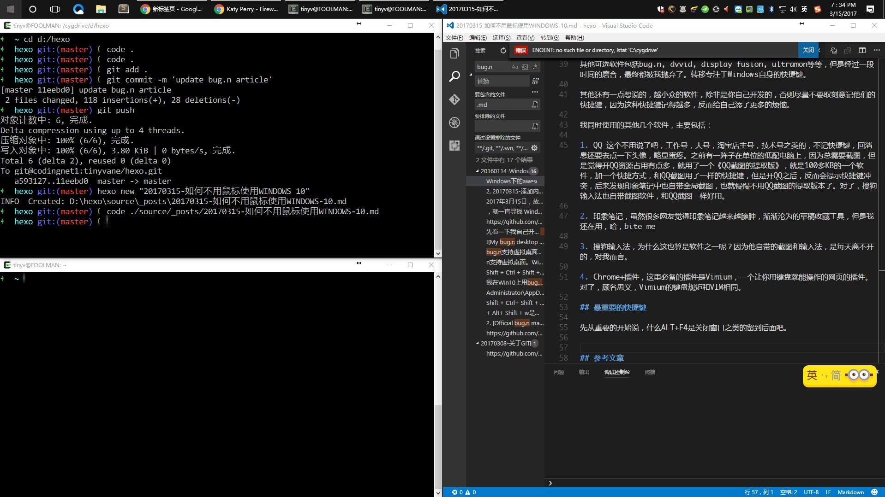
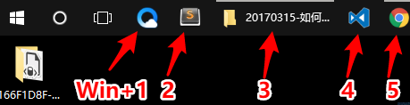

<!DOCTYPE html>
<html>
<head><meta name="generator" content="Hexo 3.9.0">
    <meta charset="utf-8">

    

    
    <title>如何不用鼠标使用WINDOWS 10 | 无聊小博</title>
    
    <meta name="viewport" content="width=device-width, initial-scale=1, maximum-scale=1">
    
        <meta name="keywords" content="快捷键,鼠标,shortcuts,windows 10,mouse">
    
    <meta name="description" content="文章更新 20170315-初次成文 20170330-补充了几个不常用的快捷键  为什么会有这篇文章其实一直就应该写这个帖子了，但是估计也是因为懒，所以一直久拖不决。 基本的理念经过很长时间的考虑，还是希望能写一下这个题目，其实我想我这里无法达到100%不用鼠标，毕竟还有LOL要玩，曾经有几天为了不用鼠标，全部依靠键盘快捷键，还吧鼠标直接拔掉来用电脑。当然那对我来说是自虐，过去的事情，现在想想也">
<meta name="keywords" content="快捷键,鼠标,shortcuts,windows 10,mouse">
<meta property="og:type" content="article">
<meta property="og:title" content="如何不用鼠标使用WINDOWS 10">
<meta property="og:url" content="http://www.wuliaole.com/post/how_to_use_windows_without_mouse/index.html">
<meta property="og:site_name" content="无聊小博">
<meta property="og:description" content="文章更新 20170315-初次成文 20170330-补充了几个不常用的快捷键  为什么会有这篇文章其实一直就应该写这个帖子了，但是估计也是因为懒，所以一直久拖不决。 基本的理念经过很长时间的考虑，还是希望能写一下这个题目，其实我想我这里无法达到100%不用鼠标，毕竟还有LOL要玩，曾经有几天为了不用鼠标，全部依靠键盘快捷键，还吧鼠标直接拔掉来用电脑。当然那对我来说是自虐，过去的事情，现在想想也">
<meta property="og:locale" content="zh-Hans">
<meta property="og:image" content="http://www.wuliaole.com/post/how_to_use_windows_without_mouse/mywindows10.jpg">
<meta property="og:updated_time" content="2018-10-11T15:31:02.000Z">
<meta name="twitter:card" content="summary">
<meta name="twitter:title" content="如何不用鼠标使用WINDOWS 10">
<meta name="twitter:description" content="文章更新 20170315-初次成文 20170330-补充了几个不常用的快捷键  为什么会有这篇文章其实一直就应该写这个帖子了，但是估计也是因为懒，所以一直久拖不决。 基本的理念经过很长时间的考虑，还是希望能写一下这个题目，其实我想我这里无法达到100%不用鼠标，毕竟还有LOL要玩，曾经有几天为了不用鼠标，全部依靠键盘快捷键，还吧鼠标直接拔掉来用电脑。当然那对我来说是自虐，过去的事情，现在想想也">
<meta name="twitter:image" content="http://www.wuliaole.com/post/how_to_use_windows_without_mouse/mywindows10.jpg">
    

    
        <link rel="alternate" href="/" title="无聊小博" type="application/atom+xml">
    

    

    <link rel="stylesheet" href="/libs/font-awesome/css/font-awesome.min.css">
    <link rel="stylesheet" href="/libs/titillium-web/styles.css">
    <link rel="stylesheet" href="/libs/source-code-pro/styles.css">

    <link rel="stylesheet" href="/css/style.css">

    <script src="/libs/jquery/3.3.1/jquery.min.js"></script>
    
    
        <link rel="stylesheet" href="/libs/lightgallery/css/lightgallery.min.css">
    
    
        <link rel="stylesheet" href="/libs/justified-gallery/justifiedGallery.min.css">
    
    
        <script type="text/javascript">
(function(i,s,o,g,r,a,m) {i['GoogleAnalyticsObject']=r;i[r]=i[r]||function() {
(i[r].q=i[r].q||[]).push(arguments)},i[r].l=1*new Date();a=s.createElement(o),
m=s.getElementsByTagName(o)[0];a.async=1;a.src=g;m.parentNode.insertBefore(a,m)
})(window,document,'script','//www.google-analytics.com/analytics.js','ga');

ga('create', 'UA-144170558-1', 'auto');
ga('send', 'pageview');

</script>

    
    
        <script>
var _hmt = _hmt || [];
(function() {
  var hm = document.createElement("script");
  hm.src = "//hm.baidu.com/hm.js?0b9af06e21a88c60dc3deb5b699a3e63";
  var s = document.getElementsByTagName("script")[0];
  s.parentNode.insertBefore(hm, s);
})();
</script>

    


</head>
</html>
<body>
    <div id="wrap">
        <header id="header">
    <div id="header-outer" class="outer">
        <div class="container">
            <div class="container-inner">
                <div id="header-title">
                    <h1 class="logo-wrap">
                        <a href="/" class="logo"></a>
                    </h1>
                    
                        <h2 class="subtitle-wrap">
                            <p class="subtitle">Keep sharp</p>
                        </h2>
                    
                </div>
                <div id="header-inner" class="nav-container">
                    <a id="main-nav-toggle" class="nav-icon fa fa-bars"></a>
                    <div class="nav-container-inner">
                        <ul id="main-nav">
                            
                                <li class="main-nav-list-item" >
                                    <a class="main-nav-list-link" href="/">Inici</a>
                                </li>
                            
                                        <ul class="main-nav-list"><li class="main-nav-list-item"><a class="main-nav-list-link" href="/categories/CentOS/">CentOS</a></li><li class="main-nav-list-item"><a class="main-nav-list-link" href="/categories/Hexo/">Hexo</a><ul class="main-nav-list-child"><li class="main-nav-list-item"><a class="main-nav-list-link" href="/categories/Hexo/基础/">基础</a></li></ul></li><li class="main-nav-list-item"><a class="main-nav-list-link" href="/categories/Linux/">Linux</a></li><li class="main-nav-list-item"><a class="main-nav-list-link" href="/categories/MacOS/">MacOS</a></li><li class="main-nav-list-item"><a class="main-nav-list-link" href="/categories/折腾/">折腾</a></li><li class="main-nav-list-item"><a class="main-nav-list-link" href="/categories/效率/">效率</a></li><li class="main-nav-list-item"><a class="main-nav-list-link" href="/categories/日常使用/">日常使用</a></li><li class="main-nav-list-item"><a class="main-nav-list-link" href="/categories/raspberry/">树莓派</a><ul class="main-nav-list-child"><li class="main-nav-list-item"><a class="main-nav-list-link" href="/categories/raspberry/入门/">入门</a></li></ul></li><li class="main-nav-list-item"><a class="main-nav-list-link" href="/categories/编程/">编程</a></li></ul>
                                    
                                <li class="main-nav-list-item" >
                                    <a class="main-nav-list-link" href="/about/index.html">Quant a</a>
                                </li>
                            
                        </ul>
                        <nav id="sub-nav">
                            <div id="search-form-wrap">

    <form class="search-form">
        <input type="text" class="ins-search-input search-form-input" placeholder="Cercar" />
        <button type="submit" class="search-form-submit"></button>
    </form>
    <div class="ins-search">
    <div class="ins-search-mask"></div>
    <div class="ins-search-container">
        <div class="ins-input-wrapper">
            <input type="text" class="ins-search-input" placeholder="Type something..." />
            <span class="ins-close ins-selectable"><i class="fa fa-times-circle"></i></span>
        </div>
        <div class="ins-section-wrapper">
            <div class="ins-section-container"></div>
        </div>
    </div>
</div>
<script>
(function (window) {
    var INSIGHT_CONFIG = {
        TRANSLATION: {
            POSTS: 'Posts',
            PAGES: 'Pages',
            CATEGORIES: 'categories',
            TAGS: 'etiquetes',
            UNTITLED: '(Untitled)',
        },
        ROOT_URL: '/',
        CONTENT_URL: '/content.json',
    };
    window.INSIGHT_CONFIG = INSIGHT_CONFIG;
})(window);
</script>
<script src="/js/insight.js"></script>

</div>
                        </nav>
                    </div>
                </div>
            </div>
        </div>
    </div>
</header>
        <div class="container">
            <div class="main-body container-inner">
                <div class="main-body-inner">
                    <section id="main">
                        <div class="main-body-header">
    <h1 class="header">
    
    <a class="page-title-link" href="/categories/效率/">效率</a>
    </h1>
</div>

                        <div class="main-body-content">
                            <article id="post-20170315-如何不用鼠标使用WINDOWS-10" class="article article-single article-type-post" itemscope itemprop="blogPost">
    <div class="article-inner">
        
            <header class="article-header">
                
    
        <h1 class="article-title" itemprop="name">
        如何不用鼠标使用WINDOWS 10
        </h1>
    

            </header>
        
        
            <div class="article-meta">
                
    <div class="article-date">
        <a href="/post/how_to_use_windows_without_mouse/" class="article-date">
            <time datetime="2017-03-15T12:02:40.000Z" itemprop="datePublished">2017-03-15</time>
        </a>
    </div>

		

                
    <div class="article-tag">
        <i class="fa fa-tag"></i>
        <a class="tag-link" href="/tags/mouse/">mouse</a>, <a class="tag-link" href="/tags/shortcuts/">shortcuts</a>, <a class="tag-link" href="/tags/windows-10/">windows 10</a>, <a class="tag-link" href="/tags/快捷键/">快捷键</a>, <a class="tag-link" href="/tags/鼠标/">鼠标</a>
    </div>

            </div>
        
        
        <div class="article-entry" itemprop="articleBody">
            <h2 id="文章更新"><a href="#文章更新" class="headerlink" title="文章更新"></a>文章更新</h2><ol>
<li>20170315-初次成文</li>
<li>20170330-补充了几个不常用的快捷键</li>
</ol>
<h2 id="为什么会有这篇文章"><a href="#为什么会有这篇文章" class="headerlink" title="为什么会有这篇文章"></a>为什么会有这篇文章</h2><p>其实一直就应该写这个帖子了，但是估计也是因为懒，所以一直久拖不决。</p>
<h2 id="基本的理念"><a href="#基本的理念" class="headerlink" title="基本的理念"></a>基本的理念</h2><p>经过很长时间的考虑，还是希望能写一下这个题目，其实我想我这里无法达到100%不用鼠标，毕竟还有LOL要玩，曾经有几天为了不用鼠标，全部依靠键盘快捷键，还吧鼠标直接拔掉来用电脑。当然那对我来说是自虐，过去的事情，现在想想也不觉得傻，而是一种经历吧。</p>
<p>其实之前在网上寻找不用鼠标的方法的时候，看到了其实不少人和我有同样的想法。比如在知乎的帖子《<a href="https://www.zhihu.com/question/21281518" target="_blank" rel="noopener">怎么样才能只用键盘不用鼠标，包括任何指针触控设备，并优雅地使用电脑？</a>》上，就有不少答案。我并觉得不用鼠标有多么的优雅，只是因为自己也有一台MBP，在那台本本上的触摸板绝对是一种享受，而在PC台式机上面，就需要鼠标键盘两个一起用，右手一会用鼠标，一会又要回到键盘上来敲字，觉得折腾不说，手也觉得更累。</p>
<p>所以，其实一切是为了效率，如果你觉得这是为了装逼，我也不想说啥，每个人都有自己的生活方式，只要不打扰到别人，我也觉得没啥可评价的。</p>
<h2 id="效率，一切为了效率"><a href="#效率，一切为了效率" class="headerlink" title="效率，一切为了效率"></a>效率，一切为了效率</h2><p>就像在上一小节中说到的，手在MBP电脑上，基本不需要移动，因为打字和滑动鼠标基本可以在很短的距离内，甚至手腕都不需要移动，那么如何在PC上也达到类似的效果呢？</p>
<p>显而易见，那么就要尽量少的使用鼠标，而尽量依靠快捷键来使用电脑。那么来说说自己的硬件设施。</p>
<ul>
<li>一台雷柏V500的87键位键盘，没有小数字键。</li>
<li>2台DELL 2312显示器，一台先锋42寸等离子电视，拼出来的3联屏。</li>
<li>一只服役超过6年的罗技MX518鼠标。</li>
</ul>
<p>好了，有了这些，还需要软件上也同样有合适的搭配。</p>
<ul>
<li>Windows 10操作系统。我用了Windows账户登录，在单位和家里的电脑保持了同样的设置。我是有多喜欢云啊-_-!!!</li>
</ul>
<p>其他可选软件包括bug.n, dvvid, display fusion, ultramon，lanchy等等，但是经过一段时间的磨合，最终都被我抛弃了。转移专注于Windows自身的快捷键。</p>
<p>其他还有一点想说的，越小众的软件，除非是你自己开发的，否则尽量不要取刻意记他们的快捷键，因为这种快捷键记得越多，反而给自己添了更多的烦恼。</p>
<p>我同时使用的其他几个软件，主要包括：</p>
<ol>
<li>QQ 这个不用说了吧，工作号，大号，淘宝店主号，技术号之类的，不记快捷键，回消息还要去点一下头像，略显蛋疼。之前有一阵子在单位的低配电脑上，因为总需要截图，但是觉得开QQ资源占用有点多，就用了一个《QQ截图的提取版》，就是100多KB的一个软件，加一个快捷方式，和QQ截图用了一样的快捷键，但是开QQ之后，反而会提示快捷键冲突，后来发现印象笔记中也自带全局截图，也就慢慢不用QQ截图的提取版本了。对了，搜狗输入法也自带截图软件，和QQ截图一样好用。</li>
<li>印象笔记，虽然很多网友觉得印象笔记越来越臃肿，渐渐沦为的草稿收藏工具，但是我还在用，哈，bite me</li>
<li>搜狗输入法，为什么这也算是软件之一呢？因为他自带的截图和输入法，是每天离不开的，对我而言。</li>
<li>Chrome+插件，这里必备的插件是Vimium，一个让你用键盘就能操作的网页的插件。对了，顾名思义，Vimium的键盘规矩和VIM相同。</li>
</ol>
<h2 id="最重要的快捷键"><a href="#最重要的快捷键" class="headerlink" title="最重要的快捷键"></a>最重要的快捷键</h2><p>先从重要的快捷键开始，什么<code>Alt+F4</code>关闭窗口之类的留到后面吧。</p>
<ul>
<li><p><code>Ctrl+Win+右箭头</code>，切换到2号桌面。</p>
</li>
<li><p><code>Ctrl+Win+左箭头</code>，切换到上一个桌面。</p>
</li>
</ul>
<p>上面两个是我觉得Windows 10超赞的一个改进，效率超高。</p>
<ul>
<li><p><code>Win+D</code>， 显示桌面，如果你需要回到桌面下打开个文件夹什么的，用这个没错，再次按一下这个快捷键组合，则会重新回到之前的状态，非常方便。顺便这里说一下<code>Win+m</code>，顾名思义，这个<code>M</code>是<code>minimize all</code>的意思，因为有一些APP不支持最小化，这个时候就需要用<code>Win+d</code>了。另外一个重要区别是，<code>Win+d</code>两次可以切换回之前的状态，但是<code>Win+M</code>多按也没用，慎用。</p>
</li>
<li><p><code>Win+Shift+左右箭头</code>，这个对于多个显示器来说，用户太大了，可以把当前窗口在左右窗口中随便移动。</p>
</li>
<li><p><code>Win+上下左右箭头</code>，这个用法比较灵活，而且也需要练习一段时间，但是用熟了，就可以实现类似Awesome的效果，比如下面这样。</p>
</li>
</ul>
<p></p>
<p>左右分类大家肯定很熟悉了，用Win+左右，把窗口放到你想放的一侧，然后另外一侧Windows会让你从已打开的窗口中选择。</p>
<p>但是Win+上下，其实用法非常灵活，比如，当前窗口，按一下<code>Win+上箭头</code>，窗口会吸附到屏幕上侧边缘，再按一下<code>Win+上</code>，会变成最大化。如果是一个窗口，按一下<code>Win+下箭头</code>，会最小化。注意了，如果先按<code>Win+左右</code>，吸附到左侧或者右侧，再上<code>Win+上</code>的话，窗口会变成一半，吸附到上侧，然后Windows会让你选择一个窗口，沾满下半侧的空间，是不是很赞？这样<code>Win+4个方向键</code>的灵活掌握，你可以实现4个窗口均分窗口，符合emcas的穷尽桌面每一个像素，却不互相打扰的原则。</p>
<p>好了，说完了这个几个技巧，就轮到切换窗口了，如果你只有一个显示器，<code>Alt+Tab</code>和<code>Win+Tab</code>的效果区别不大（后者炫酷一些），但是如果你有多个显示器，或者想利用Windows 10的多个虚拟说面，区别就比较大了。</p>
<p>这里的情况，主要针对多个屏幕的用户，在多屏条件下，<code>Alt+Tab</code>，会列出所有显示器上的所有窗口，而<code>Win+Tab</code>则会分别在每个显示器上，把窗口分别列出来，这个时候，使用<code>Tab</code>键，可以依次在 <code>当前桌面窗口</code>、<code>添加虚拟桌面</code>、<code>下一个显示的桌面窗口</code>、<code>下个窗口的添加虚拟桌面</code>等几个选项之间轮换，注意，<code>Alt+Tab</code>、<code>Win+Tab</code>和<code>Tab</code>这几个快捷键，都可以配合<code>Shift</code>组合使用，实现倒序选择了。</p>
<h2 id="Win-123"><a href="#Win-123" class="headerlink" title="Win+123"></a>Win+123</h2><p></p>
<p>从上面的图片中可以看到，如果是经常使用的应用程序可以将它固定到任务栏，然后通过快捷键，<code>win + 1</code>、<code>win + 2</code>、<code>win + 3</code>等来进行快捷访问。</p>
<h2 id="其他快捷键"><a href="#其他快捷键" class="headerlink" title="其他快捷键"></a>其他快捷键</h2><ul>
<li><code>Win+Alt+D</code> 显示日期时间，这个有啥用？谁有用谁记吧。</li>
<li><code>Win+E</code>，打开我的电脑，用来打开文件夹很有用。</li>
<li><code>Win+L</code>，锁定电脑，我自己用电脑，基本不关机，也没用。</li>
<li><code>Win+x</code>，相当于Start开始按钮的右键，里面有一些常用的设置。</li>
<li><code>Win+R</code>，这个不用多说了吧，运行，常用。</li>
<li><code>Win+A</code>，打开Windows 10桌面右侧的通知中心，相当于MBP上的两个手指右侧划入。</li>
<li><code>Win</code>，这个。。。不多说了吧。</li>
<li><code>Ctrl+s</code>，保存，最常用的，基本上都不算快捷键了。因为写论文总要保存保存。。。。再保存。</li>
</ul>
<h2 id="其他"><a href="#其他" class="headerlink" title="其他"></a>其他</h2><ul>
<li>ALT+空格+X 最大化窗口</li>
<li>ALT+空格+R 还原窗口原始大小</li>
<li>ALT+空格+N 最小化窗口</li>
<li>由此可见，ALT+X是打开左上角的图标的右键，比如可以ALT+空格+C是关闭</li>
<li>CTRL+W 关闭窗口，比如QQ中的关闭某个联系人，浏览器中关闭某个TAB</li>
<li>WIN+E 打开我的电脑，也可以用来打开个文件浏览器用</li>
<li>CTRL+O 打开，什么都能打开</li>
<li>CTRL+N 新的程序，新的进程</li>
<li>CTRL+T 新的浏览器标签（tab）</li>
<li>CTRL+Z 恢复上一步操作 </li>
<li>CTRL+SHIFT+ESC 打开任务管理器，这个用得很多因为有的程序打开了，就无法关闭了</li>
</ul>
<p>好了，Game over，have fun.</p>
<h2 id="参考文章"><a href="#参考文章" class="headerlink" title="参考文章"></a>参考文章</h2><ol>
<li><a href="https://www.zhihu.com/question/28993252" target="_blank" rel="noopener">怎样不用鼠标，完全只靠键盘操作电脑？</a></li>
</ol>

        </div>
        <footer class="article-footer">
            


    <a data-url="http://www.wuliaole.com/post/how_to_use_windows_without_mouse/" data-id="cjygi4p0g00js8wokxwlxzvpo" class="article-share-link"><i class="fa fa-share"></i>Compartir</a>
<script>
    (function ($) {
        $('body').on('click', function() {
            $('.article-share-box.on').removeClass('on');
        }).on('click', '.article-share-link', function(e) {
            e.stopPropagation();

            var $this = $(this),
                url = $this.attr('data-url'),
                encodedUrl = encodeURIComponent(url),
                id = 'article-share-box-' + $this.attr('data-id'),
                offset = $this.offset(),
                box;

            if ($('#' + id).length) {
                box = $('#' + id);

                if (box.hasClass('on')){
                    box.removeClass('on');
                    return;
                }
            } else {
                var html = [
                    '<div id="' + id + '" class="article-share-box">',
                        '<input class="article-share-input" value="' + url + '">',
                        '<div class="article-share-links">',
                            '<a href="https://twitter.com/intent/tweet?url=' + encodedUrl + '" class="article-share-twitter" target="_blank" title="Twitter"></a>',
                            '<a href="https://www.facebook.com/sharer.php?u=' + encodedUrl + '" class="article-share-facebook" target="_blank" title="Facebook"></a>',
                            '<a href="http://pinterest.com/pin/create/button/?url=' + encodedUrl + '" class="article-share-pinterest" target="_blank" title="Pinterest"></a>',
                            '<a href="https://plus.google.com/share?url=' + encodedUrl + '" class="article-share-google" target="_blank" title="Google+"></a>',
                        '</div>',
                    '</div>'
                ].join('');

              box = $(html);

              $('body').append(box);
            }

            $('.article-share-box.on').hide();

            box.css({
                top: offset.top + 25,
                left: offset.left
            }).addClass('on');

        }).on('click', '.article-share-box', function (e) {
            e.stopPropagation();
        }).on('click', '.article-share-box-input', function () {
            $(this).select();
        }).on('click', '.article-share-box-link', function (e) {
            e.preventDefault();
            e.stopPropagation();

            window.open(this.href, 'article-share-box-window-' + Date.now(), 'width=500,height=450');
        });
    })(jQuery);
</script>

        </footer>
    </div>
    <script type="application/ld+json">
    {
        "@context": "https://schema.org",
        "@type": "BlogPosting",
        "author": {
            "@type": "Person",
            "name": "节约用爱"
        },
        "headline": "如何不用鼠标使用WINDOWS 10",
        "image": "http://www.wuliaole.commywindows10.jpg",
        "keywords": "快捷键 鼠标 shortcuts windows 10 mouse",
        "genre": "效率",
        "datePublished": "2017-03-15",
        "dateCreated": "2017-03-15",
        "dateModified": "2018-10-11",
        "url": "http://www.wuliaole.com/post/how_to_use_windows_without_mouse/",
        "description": "文章更新
20170315-初次成文
20170330-补充了几个不常用的快捷键

为什么会有这篇文章其实一直就应该写这个帖子了，但是估计也是因为懒，所以一直久拖不决。
基本的理念经过很长时间的考虑，还是希望能写一下这个题目，其实我想我这里无法达到100%不用鼠标，毕竟还有LOL要玩，曾经有几天为了不用鼠标，全部依靠键盘快捷键，还吧鼠标直接拔掉来用电脑。当然那对我来说是自虐，过去的事情，现在想想也"
        "wordCount": 89
    }
</script>

</article>

    <section id="comments">
    
        
    <div id="disqus_thread">
        <noscript>Please enable JavaScript to view the <a href="//disqus.com/?ref_noscript">comments powered by Disqus.</a></noscript>
    </div>

    
    </section>


                        </div>
                    </section>
                    <aside id="sidebar">
    <a class="sidebar-toggle" title="Expand Sidebar"><i class="toggle icon"></i></a>
    <div class="sidebar-top">
        <p>seguir:</p>
        <ul class="social-links">
            
                
                <li>
                    <a class="social-tooltip" title="twitter" href="/" target="_blank" rel="noopener">
                        <i class="icon fa fa-twitter"></i>
                    </a>
                </li>
                
            
                
                <li>
                    <a class="social-tooltip" title="facebook" href="/" target="_blank" rel="noopener">
                        <i class="icon fa fa-facebook"></i>
                    </a>
                </li>
                
            
                
                <li>
                    <a class="social-tooltip" title="google-plus" href="/" target="_blank" rel="noopener">
                        <i class="icon fa fa-google-plus"></i>
                    </a>
                </li>
                
            
                
                <li>
                    <a class="social-tooltip" title="github" href="https://github.com/tinyvane" target="_blank" rel="noopener">
                        <i class="icon fa fa-github"></i>
                    </a>
                </li>
                
            
                
                <li>
                    <a class="social-tooltip" title="weibo" href="/" target="_blank" rel="noopener">
                        <i class="icon fa fa-weibo"></i>
                    </a>
                </li>
                
            
                
                <li>
                    <a class="social-tooltip" title="rss" href="/" target="_blank" rel="noopener">
                        <i class="icon fa fa-rss"></i>
                    </a>
                </li>
                
            
        </ul>
    </div>
    
        
<nav id="article-nav">
    
        <a href="/post/how_to_deal_with_vscode_and_git_from_cygwin/" id="article-nav-newer" class="article-nav-link-wrap">
        <strong class="article-nav-caption">més nou</strong>
        <p class="article-nav-title">
        
            关于VSCODE遇到的ENOENT-no-such-file-or-directory-lstat-c-ygdrive错误
        
        </p>
        <i class="icon fa fa-chevron-right" id="icon-chevron-right"></i>
    </a>
    
    
        <a href="/post/learn_about_macOS_directory_structure_and_formula_installation/" id="article-nav-older" class="article-nav-link-wrap">
        <strong class="article-nav-caption">antic</strong>
        <p class="article-nav-title">关于macOS的目录和软件安装</p>
        <i class="icon fa fa-chevron-left" id="icon-chevron-left"></i>
        </a>
    
</nav>

    
    <div class="widgets-container">
        
            
                

            
                
    <div class="widget-wrap">
        <h3 class="widget-title">recents</h3>
        <div class="widget">
            <ul id="recent-post" class="">
                
                    <li>
                        
                        <div class="item-thumbnail">
                            <a href="/post/how_does_office365_coexist_with_msi_visio_2016/" class="thumbnail">
    
    
        <span class="thumbnail-image thumbnail-none"></span>
    
    
</a>

                        </div>
                        
                        <div class="item-inner">
                            <p class="item-category"><a class="article-category-link" href="/categories/折腾/">折腾</a></p>
                            <p class="item-title"><a href="/post/how_does_office365_coexist_with_msi_visio_2016/" class="title">20190719-微软即点即用和msi共存的软件安装方法</a></p>
                            <p class="item-date"><time datetime="2019-07-19T09:13:03.000Z" itemprop="datePublished">2019-07-19</time></p>
                        </div>
                    </li>
                
                    <li>
                        
                        <div class="item-thumbnail">
                            <a href="/post/let_windows_mail_office_login_using_shadowsocks/" class="thumbnail">
    
    
        <span class="thumbnail-image thumbnail-none"></span>
    
    
</a>

                        </div>
                        
                        <div class="item-inner">
                            <p class="item-category"><a class="article-category-link" href="/categories/折腾/">折腾</a></p>
                            <p class="item-title"><a href="/post/let_windows_mail_office_login_using_shadowsocks/" class="title">20190719-shadowsocks支持windows邮件、OFFICE登陆翻墙</a></p>
                            <p class="item-date"><time datetime="2019-07-19T05:11:23.000Z" itemprop="datePublished">2019-07-19</time></p>
                        </div>
                    </li>
                
                    <li>
                        
                        <div class="item-thumbnail">
                            <a href="/post/common_used_git_commands/" class="thumbnail">
    
    
        <span class="thumbnail-image thumbnail-none"></span>
    
    
</a>

                        </div>
                        
                        <div class="item-inner">
                            <p class="item-category"><a class="article-category-link" href="/categories/折腾/">折腾</a></p>
                            <p class="item-title"><a href="/post/common_used_git_commands/" class="title">201907199-常用GIT命令和使用场景</a></p>
                            <p class="item-date"><time datetime="2019-07-19T04:23:57.000Z" itemprop="datePublished">2019-07-19</time></p>
                        </div>
                    </li>
                
                    <li>
                        
                        <div class="item-thumbnail">
                            <a href="/post/install_centos_74_php_72_and_mysql_80_on_aliyun/" class="thumbnail">
    
    
        <span class="thumbnail-image thumbnail-none"></span>
    
    
</a>

                        </div>
                        
                        <div class="item-inner">
                            <p class="item-category"><a class="article-category-link" href="/categories/折腾/">折腾</a></p>
                            <p class="item-title"><a href="/post/install_centos_74_php_72_and_mysql_80_on_aliyun/" class="title">阿里云centos7.4基础</a></p>
                            <p class="item-date"><time datetime="2018-10-11T15:25:17.000Z" itemprop="datePublished">2018-10-11</time></p>
                        </div>
                    </li>
                
                    <li>
                        
                        <div class="item-thumbnail">
                            <a href="/post/7_days_with_ningning/" class="thumbnail">
    
    
        <span class="thumbnail-image thumbnail-none"></span>
    
    
</a>

                        </div>
                        
                        <div class="item-inner">
                            <p class="item-category"><a class="article-category-link" href="/categories/折腾/">折腾</a></p>
                            <p class="item-title"><a href="/post/7_days_with_ningning/" class="title">儿子最近的脾气感觉越来越大呢</a></p>
                            <p class="item-date"><time datetime="2018-10-07T13:36:05.000Z" itemprop="datePublished">2018-10-07</time></p>
                        </div>
                    </li>
                
            </ul>
        </div>
    </div>

            
                
    <div class="widget-wrap widget-list">
        <h3 class="widget-title">categories</h3>
        <div class="widget">
            <ul class="category-list"><li class="category-list-item"><a class="category-list-link" href="/categories/CentOS/">CentOS</a><span class="category-list-count">4</span></li><li class="category-list-item"><a class="category-list-link" href="/categories/Hexo/">Hexo</a><span class="category-list-count">11</span><ul class="category-list-child"><li class="category-list-item"><a class="category-list-link" href="/categories/Hexo/基础/">基础</a><span class="category-list-count">2</span></li></ul></li><li class="category-list-item"><a class="category-list-link" href="/categories/Linux/">Linux</a><span class="category-list-count">6</span></li><li class="category-list-item"><a class="category-list-link" href="/categories/MacOS/">MacOS</a><span class="category-list-count">3</span></li><li class="category-list-item"><a class="category-list-link" href="/categories/折腾/">折腾</a><span class="category-list-count">62</span></li><li class="category-list-item"><a class="category-list-link" href="/categories/效率/">效率</a><span class="category-list-count">7</span></li><li class="category-list-item"><a class="category-list-link" href="/categories/日常使用/">日常使用</a><span class="category-list-count">1</span></li><li class="category-list-item"><a class="category-list-link" href="/categories/raspberry/">树莓派</a><span class="category-list-count">11</span><ul class="category-list-child"><li class="category-list-item"><a class="category-list-link" href="/categories/raspberry/入门/">入门</a><span class="category-list-count">2</span></li></ul></li><li class="category-list-item"><a class="category-list-link" href="/categories/编程/">编程</a><span class="category-list-count">8</span></li></ul>
        </div>
    </div>


            
                
    <div class="widget-wrap widget-list">
        <h3 class="widget-title">arxius</h3>
        <div class="widget">
            <ul class="archive-list"><li class="archive-list-item"><a class="archive-list-link" href="/archives/2019/07/">July 2019</a><span class="archive-list-count">3</span></li><li class="archive-list-item"><a class="archive-list-link" href="/archives/2018/10/">October 2018</a><span class="archive-list-count">3</span></li><li class="archive-list-item"><a class="archive-list-link" href="/archives/2018/09/">September 2018</a><span class="archive-list-count">4</span></li><li class="archive-list-item"><a class="archive-list-link" href="/archives/2018/05/">May 2018</a><span class="archive-list-count">1</span></li><li class="archive-list-item"><a class="archive-list-link" href="/archives/2018/02/">February 2018</a><span class="archive-list-count">2</span></li><li class="archive-list-item"><a class="archive-list-link" href="/archives/2017/08/">August 2017</a><span class="archive-list-count">4</span></li><li class="archive-list-item"><a class="archive-list-link" href="/archives/2017/05/">May 2017</a><span class="archive-list-count">4</span></li><li class="archive-list-item"><a class="archive-list-link" href="/archives/2017/04/">April 2017</a><span class="archive-list-count">2</span></li><li class="archive-list-item"><a class="archive-list-link" href="/archives/2017/03/">March 2017</a><span class="archive-list-count">10</span></li><li class="archive-list-item"><a class="archive-list-link" href="/archives/2017/02/">February 2017</a><span class="archive-list-count">3</span></li><li class="archive-list-item"><a class="archive-list-link" href="/archives/2016/10/">October 2016</a><span class="archive-list-count">1</span></li><li class="archive-list-item"><a class="archive-list-link" href="/archives/2016/09/">September 2016</a><span class="archive-list-count">9</span></li><li class="archive-list-item"><a class="archive-list-link" href="/archives/2016/08/">August 2016</a><span class="archive-list-count">10</span></li><li class="archive-list-item"><a class="archive-list-link" href="/archives/2016/07/">July 2016</a><span class="archive-list-count">16</span></li><li class="archive-list-item"><a class="archive-list-link" href="/archives/2016/06/">June 2016</a><span class="archive-list-count">9</span></li><li class="archive-list-item"><a class="archive-list-link" href="/archives/2016/05/">May 2016</a><span class="archive-list-count">6</span></li><li class="archive-list-item"><a class="archive-list-link" href="/archives/2016/04/">April 2016</a><span class="archive-list-count">10</span></li><li class="archive-list-item"><a class="archive-list-link" href="/archives/2016/03/">March 2016</a><span class="archive-list-count">5</span></li><li class="archive-list-item"><a class="archive-list-link" href="/archives/2016/01/">January 2016</a><span class="archive-list-count">2</span></li><li class="archive-list-item"><a class="archive-list-link" href="/archives/2015/12/">December 2015</a><span class="archive-list-count">13</span></li></ul>
        </div>
    </div>


            
                
    <div class="widget-wrap widget-list">
        <h3 class="widget-title">etiquetes</h3>
        <div class="widget">
            <ul class="tag-list"><li class="tag-list-item"><a class="tag-list-link" href="/tags/net/">.net</a><span class="tag-list-count">3</span></li><li class="tag-list-item"><a class="tag-list-link" href="/tags/net-core/">.net core</a><span class="tag-list-count">1</span></li><li class="tag-list-item"><a class="tag-list-link" href="/tags/100m宽带/">100m宽带</a><span class="tag-list-count">1</span></li><li class="tag-list-item"><a class="tag-list-link" href="/tags/3D建模/">3D建模</a><span class="tag-list-count">1</span></li><li class="tag-list-item"><a class="tag-list-link" href="/tags/404/">404</a><span class="tag-list-count">1</span></li><li class="tag-list-item"><a class="tag-list-link" href="/tags/C/">C#</a><span class="tag-list-count">1</span></li><li class="tag-list-item"><a class="tag-list-link" href="/tags/FTP/">FTP</a><span class="tag-list-count">1</span></li><li class="tag-list-item"><a class="tag-list-link" href="/tags/GPT/">GPT</a><span class="tag-list-count">1</span></li><li class="tag-list-item"><a class="tag-list-link" href="/tags/Hexo/">Hexo</a><span class="tag-list-count">1</span></li><li class="tag-list-item"><a class="tag-list-link" href="/tags/IMG/">IMG</a><span class="tag-list-count">1</span></li><li class="tag-list-item"><a class="tag-list-link" href="/tags/Linux/">Linux</a><span class="tag-list-count">1</span></li><li class="tag-list-item"><a class="tag-list-link" href="/tags/M3-bitlocker-loader/">M3 bitlocker loader</a><span class="tag-list-count">1</span></li><li class="tag-list-item"><a class="tag-list-link" href="/tags/MAC/">MAC</a><span class="tag-list-count">2</span></li><li class="tag-list-item"><a class="tag-list-link" href="/tags/MBR/">MBR</a><span class="tag-list-count">1</span></li><li class="tag-list-item"><a class="tag-list-link" href="/tags/MarkDown/">MarkDown</a><span class="tag-list-count">1</span></li><li class="tag-list-item"><a class="tag-list-link" href="/tags/OSX/">OSX</a><span class="tag-list-count">1</span></li><li class="tag-list-item"><a class="tag-list-link" href="/tags/PC/">PC</a><span class="tag-list-count">1</span></li><li class="tag-list-item"><a class="tag-list-link" href="/tags/PHP/">PHP</a><span class="tag-list-count">1</span></li><li class="tag-list-item"><a class="tag-list-link" href="/tags/RASPBERRY/">RASPBERRY</a><span class="tag-list-count">1</span></li><li class="tag-list-item"><a class="tag-list-link" href="/tags/Raspberry/">Raspberry</a><span class="tag-list-count">1</span></li><li class="tag-list-item"><a class="tag-list-link" href="/tags/Resilio-Sync/">Resilio Sync</a><span class="tag-list-count">1</span></li><li class="tag-list-item"><a class="tag-list-link" href="/tags/Sublime-Text-3/">Sublime Text 3</a><span class="tag-list-count">1</span></li><li class="tag-list-item"><a class="tag-list-link" href="/tags/VSCode/">VSCode</a><span class="tag-list-count">1</span></li><li class="tag-list-item"><a class="tag-list-link" href="/tags/Vim/">Vim</a><span class="tag-list-count">1</span></li><li class="tag-list-item"><a class="tag-list-link" href="/tags/Vimium/">Vimium</a><span class="tag-list-count">1</span></li><li class="tag-list-item"><a class="tag-list-link" href="/tags/Visual-Studio/">Visual Studio</a><span class="tag-list-count">1</span></li><li class="tag-list-item"><a class="tag-list-link" href="/tags/WD/">WD</a><span class="tag-list-count">1</span></li><li class="tag-list-item"><a class="tag-list-link" href="/tags/Winform/">Winform</a><span class="tag-list-count">1</span></li><li class="tag-list-item"><a class="tag-list-link" href="/tags/WordPress/">WordPress</a><span class="tag-list-count">1</span></li><li class="tag-list-item"><a class="tag-list-link" href="/tags/Xamarin/">Xamarin</a><span class="tag-list-count">1</span></li><li class="tag-list-item"><a class="tag-list-link" href="/tags/aliyun/">aliyun</a><span class="tag-list-count">1</span></li><li class="tag-list-item"><a class="tag-list-link" href="/tags/apache/">apache</a><span class="tag-list-count">1</span></li><li class="tag-list-item"><a class="tag-list-link" href="/tags/apple/">apple</a><span class="tag-list-count">1</span></li><li class="tag-list-item"><a class="tag-list-link" href="/tags/autocad/">autocad</a><span class="tag-list-count">1</span></li><li class="tag-list-item"><a class="tag-list-link" href="/tags/bash/">bash</a><span class="tag-list-count">1</span></li><li class="tag-list-item"><a class="tag-list-link" href="/tags/bitlocker/">bitlocker</a><span class="tag-list-count">1</span></li><li class="tag-list-item"><a class="tag-list-link" href="/tags/bonjor/">bonjor</a><span class="tag-list-count">1</span></li><li class="tag-list-item"><a class="tag-list-link" href="/tags/bower/">bower</a><span class="tag-list-count">1</span></li><li class="tag-list-item"><a class="tag-list-link" href="/tags/brew/">brew</a><span class="tag-list-count">2</span></li><li class="tag-list-item"><a class="tag-list-link" href="/tags/bt-sync/">bt sync</a><span class="tag-list-count">2</span></li><li class="tag-list-item"><a class="tag-list-link" href="/tags/btsync/">btsync</a><span class="tag-list-count">1</span></li><li class="tag-list-item"><a class="tag-list-link" href="/tags/c/">c#</a><span class="tag-list-count">6</span></li><li class="tag-list-item"><a class="tag-list-link" href="/tags/centos/">centos</a><span class="tag-list-count">10</span></li><li class="tag-list-item"><a class="tag-list-link" href="/tags/centos7/">centos7</a><span class="tag-list-count">1</span></li><li class="tag-list-item"><a class="tag-list-link" href="/tags/chrome/">chrome</a><span class="tag-list-count">1</span></li><li class="tag-list-item"><a class="tag-list-link" href="/tags/coding-net/">coding.net</a><span class="tag-list-count">1</span></li><li class="tag-list-item"><a class="tag-list-link" href="/tags/cow/">cow</a><span class="tag-list-count">1</span></li><li class="tag-list-item"><a class="tag-list-link" href="/tags/cp/">cp</a><span class="tag-list-count">1</span></li><li class="tag-list-item"><a class="tag-list-link" href="/tags/cron/">cron</a><span class="tag-list-count">1</span></li><li class="tag-list-item"><a class="tag-list-link" href="/tags/crontab/">crontab</a><span class="tag-list-count">1</span></li><li class="tag-list-item"><a class="tag-list-link" href="/tags/csharp/">csharp</a><span class="tag-list-count">2</span></li><li class="tag-list-item"><a class="tag-list-link" href="/tags/cygwin/">cygwin</a><span class="tag-list-count">1</span></li><li class="tag-list-item"><a class="tag-list-link" href="/tags/deploy/">deploy</a><span class="tag-list-count">1</span></li><li class="tag-list-item"><a class="tag-list-link" href="/tags/dotnetcore/">dotnetcore</a><span class="tag-list-count">1</span></li><li class="tag-list-item"><a class="tag-list-link" href="/tags/dropbear/">dropbear</a><span class="tag-list-count">1</span></li><li class="tag-list-item"><a class="tag-list-link" href="/tags/edge/">edge</a><span class="tag-list-count">1</span></li><li class="tag-list-item"><a class="tag-list-link" href="/tags/electon/">electon</a><span class="tag-list-count">1</span></li><li class="tag-list-item"><a class="tag-list-link" href="/tags/emergency-mode/">emergency mode</a><span class="tag-list-count">1</span></li><li class="tag-list-item"><a class="tag-list-link" href="/tags/ext4/">ext4</a><span class="tag-list-count">1</span></li><li class="tag-list-item"><a class="tag-list-link" href="/tags/firewall/">firewall</a><span class="tag-list-count">1</span></li><li class="tag-list-item"><a class="tag-list-link" href="/tags/formula/">formula</a><span class="tag-list-count">1</span></li><li class="tag-list-item"><a class="tag-list-link" href="/tags/ghost/">ghost</a><span class="tag-list-count">1</span></li><li class="tag-list-item"><a class="tag-list-link" href="/tags/git/">git</a><span class="tag-list-count">9</span></li><li class="tag-list-item"><a class="tag-list-link" href="/tags/github/">github</a><span class="tag-list-count">4</span></li><li class="tag-list-item"><a class="tag-list-link" href="/tags/gz/">gz</a><span class="tag-list-count">1</span></li><li class="tag-list-item"><a class="tag-list-link" href="/tags/hexo/">hexo</a><span class="tag-list-count">10</span></li><li class="tag-list-item"><a class="tag-list-link" href="/tags/hfs/">hfs</a><span class="tag-list-count">1</span></li><li class="tag-list-item"><a class="tag-list-link" href="/tags/hfs-for-Windows/">hfs for Windows</a><span class="tag-list-count">1</span></li><li class="tag-list-item"><a class="tag-list-link" href="/tags/homebrew/">homebrew</a><span class="tag-list-count">4</span></li><li class="tag-list-item"><a class="tag-list-link" href="/tags/hook/">hook</a><span class="tag-list-count">1</span></li><li class="tag-list-item"><a class="tag-list-link" href="/tags/ie/">ie</a><span class="tag-list-count">1</span></li><li class="tag-list-item"><a class="tag-list-link" href="/tags/karabiner/">karabiner</a><span class="tag-list-count">1</span></li><li class="tag-list-item"><a class="tag-list-link" href="/tags/launchagents/">launchagents</a><span class="tag-list-count">2</span></li><li class="tag-list-item"><a class="tag-list-link" href="/tags/launchdaemon/">launchdaemon</a><span class="tag-list-count">1</span></li><li class="tag-list-item"><a class="tag-list-link" href="/tags/linux/">linux</a><span class="tag-list-count">10</span></li><li class="tag-list-item"><a class="tag-list-link" href="/tags/ln/">ln</a><span class="tag-list-count">1</span></li><li class="tag-list-item"><a class="tag-list-link" href="/tags/mac/">mac</a><span class="tag-list-count">15</span></li><li class="tag-list-item"><a class="tag-list-link" href="/tags/macOS/">macOS</a><span class="tag-list-count">1</span></li><li class="tag-list-item"><a class="tag-list-link" href="/tags/mklink/">mklink</a><span class="tag-list-count">1</span></li><li class="tag-list-item"><a class="tag-list-link" href="/tags/mouse/">mouse</a><span class="tag-list-count">1</span></li><li class="tag-list-item"><a class="tag-list-link" href="/tags/msi/">msi</a><span class="tag-list-count">1</span></li><li class="tag-list-item"><a class="tag-list-link" href="/tags/mv/">mv</a><span class="tag-list-count">1</span></li><li class="tag-list-item"><a class="tag-list-link" href="/tags/mysql/">mysql</a><span class="tag-list-count">3</span></li><li class="tag-list-item"><a class="tag-list-link" href="/tags/nginx/">nginx</a><span class="tag-list-count">2</span></li><li class="tag-list-item"><a class="tag-list-link" href="/tags/ngrok/">ngrok</a><span class="tag-list-count">1</span></li><li class="tag-list-item"><a class="tag-list-link" href="/tags/node-js/">node.js</a><span class="tag-list-count">3</span></li><li class="tag-list-item"><a class="tag-list-link" href="/tags/npm/">npm</a><span class="tag-list-count">3</span></li><li class="tag-list-item"><a class="tag-list-link" href="/tags/office/">office</a><span class="tag-list-count">1</span></li><li class="tag-list-item"><a class="tag-list-link" href="/tags/oh-my-zsh/">oh-my-zsh</a><span class="tag-list-count">1</span></li><li class="tag-list-item"><a class="tag-list-link" href="/tags/openvpn/">openvpn</a><span class="tag-list-count">1</span></li><li class="tag-list-item"><a class="tag-list-link" href="/tags/openwrt/">openwrt</a><span class="tag-list-count">1</span></li><li class="tag-list-item"><a class="tag-list-link" href="/tags/opernwrt/">opernwrt</a><span class="tag-list-count">1</span></li><li class="tag-list-item"><a class="tag-list-link" href="/tags/osx/">osx</a><span class="tag-list-count">4</span></li><li class="tag-list-item"><a class="tag-list-link" href="/tags/pc/">pc</a><span class="tag-list-count">3</span></li><li class="tag-list-item"><a class="tag-list-link" href="/tags/php/">php</a><span class="tag-list-count">7</span></li><li class="tag-list-item"><a class="tag-list-link" href="/tags/php-fpm/">php-fpm</a><span class="tag-list-count">2</span></li><li class="tag-list-item"><a class="tag-list-link" href="/tags/progon/">progon</a><span class="tag-list-count">1</span></li><li class="tag-list-item"><a class="tag-list-link" href="/tags/rapsberry/">rapsberry</a><span class="tag-list-count">1</span></li><li class="tag-list-item"><a class="tag-list-link" href="/tags/raspberry/">raspberry</a><span class="tag-list-count">5</span></li><li class="tag-list-item"><a class="tag-list-link" href="/tags/raspberry-pi/">raspberry pi</a><span class="tag-list-count">4</span></li><li class="tag-list-item"><a class="tag-list-link" href="/tags/raspbian/">raspbian</a><span class="tag-list-count">1</span></li><li class="tag-list-item"><a class="tag-list-link" href="/tags/redhat/">redhat</a><span class="tag-list-count">1</span></li><li class="tag-list-item"><a class="tag-list-link" href="/tags/repo/">repo</a><span class="tag-list-count">1</span></li><li class="tag-list-item"><a class="tag-list-link" href="/tags/resilio-sync/">resilio sync</a><span class="tag-list-count">1</span></li><li class="tag-list-item"><a class="tag-list-link" href="/tags/resiliosync/">resiliosync</a><span class="tag-list-count">1</span></li><li class="tag-list-item"><a class="tag-list-link" href="/tags/responsity/">responsity</a><span class="tag-list-count">1</span></li><li class="tag-list-item"><a class="tag-list-link" href="/tags/rhel/">rhel</a><span class="tag-list-count">2</span></li><li class="tag-list-item"><a class="tag-list-link" href="/tags/rm/">rm</a><span class="tag-list-count">1</span></li><li class="tag-list-item"><a class="tag-list-link" href="/tags/rpm/">rpm</a><span class="tag-list-count">1</span></li><li class="tag-list-item"><a class="tag-list-link" href="/tags/rsa/">rsa</a><span class="tag-list-count">1</span></li><li class="tag-list-item"><a class="tag-list-link" href="/tags/runtime/">runtime</a><span class="tag-list-count">1</span></li><li class="tag-list-item"><a class="tag-list-link" href="/tags/screen/">screen</a><span class="tag-list-count">1</span></li><li class="tag-list-item"><a class="tag-list-link" href="/tags/sdk/">sdk</a><span class="tag-list-count">1</span></li><li class="tag-list-item"><a class="tag-list-link" href="/tags/shadowsocks/">shadowsocks</a><span class="tag-list-count">5</span></li><li class="tag-list-item"><a class="tag-list-link" href="/tags/shell/">shell</a><span class="tag-list-count">2</span></li><li class="tag-list-item"><a class="tag-list-link" href="/tags/shortcuts/">shortcuts</a><span class="tag-list-count">1</span></li><li class="tag-list-item"><a class="tag-list-link" href="/tags/sketchup/">sketchup</a><span class="tag-list-count">1</span></li><li class="tag-list-item"><a class="tag-list-link" href="/tags/socks5/">socks5</a><span class="tag-list-count">1</span></li><li class="tag-list-item"><a class="tag-list-link" href="/tags/ssh/">ssh</a><span class="tag-list-count">2</span></li><li class="tag-list-item"><a class="tag-list-link" href="/tags/symlink/">symlink</a><span class="tag-list-count">1</span></li><li class="tag-list-item"><a class="tag-list-link" href="/tags/syncthing/">syncthing</a><span class="tag-list-count">1</span></li><li class="tag-list-item"><a class="tag-list-link" href="/tags/synergy/">synergy</a><span class="tag-list-count">1</span></li><li class="tag-list-item"><a class="tag-list-link" href="/tags/tar/">tar</a><span class="tag-list-count">1</span></li><li class="tag-list-item"><a class="tag-list-link" href="/tags/thinkphp/">thinkphp</a><span class="tag-list-count">1</span></li><li class="tag-list-item"><a class="tag-list-link" href="/tags/uac/">uac</a><span class="tag-list-count">1</span></li><li class="tag-list-item"><a class="tag-list-link" href="/tags/vim/">vim</a><span class="tag-list-count">1</span></li><li class="tag-list-item"><a class="tag-list-link" href="/tags/visio/">visio</a><span class="tag-list-count">1</span></li><li class="tag-list-item"><a class="tag-list-link" href="/tags/visual-studio/">visual studio</a><span class="tag-list-count">1</span></li><li class="tag-list-item"><a class="tag-list-link" href="/tags/vpn/">vpn</a><span class="tag-list-count">1</span></li><li class="tag-list-item"><a class="tag-list-link" href="/tags/vs/">vs</a><span class="tag-list-count">1</span></li><li class="tag-list-item"><a class="tag-list-link" href="/tags/vscode/">vscode</a><span class="tag-list-count">4</span></li><li class="tag-list-item"><a class="tag-list-link" href="/tags/wifi/">wifi</a><span class="tag-list-count">1</span></li><li class="tag-list-item"><a class="tag-list-link" href="/tags/windows/">windows</a><span class="tag-list-count">4</span></li><li class="tag-list-item"><a class="tag-list-link" href="/tags/windows-10/">windows 10</a><span class="tag-list-count">1</span></li><li class="tag-list-item"><a class="tag-list-link" href="/tags/windows10/">windows10</a><span class="tag-list-count">2</span></li><li class="tag-list-item"><a class="tag-list-link" href="/tags/winform/">winform</a><span class="tag-list-count">1</span></li><li class="tag-list-item"><a class="tag-list-link" href="/tags/wireshark/">wireshark</a><span class="tag-list-count">1</span></li><li class="tag-list-item"><a class="tag-list-link" href="/tags/wordpress/">wordpress</a><span class="tag-list-count">2</span></li><li class="tag-list-item"><a class="tag-list-link" href="/tags/xamarin/">xamarin</a><span class="tag-list-count">2</span></li><li class="tag-list-item"><a class="tag-list-link" href="/tags/xampp/">xampp</a><span class="tag-list-count">1</span></li><li class="tag-list-item"><a class="tag-list-link" href="/tags/xdebug/">xdebug</a><span class="tag-list-count">1</span></li><li class="tag-list-item"><a class="tag-list-link" href="/tags/yum/">yum</a><span class="tag-list-count">2</span></li><li class="tag-list-item"><a class="tag-list-link" href="/tags/代码/">代码</a><span class="tag-list-count">1</span></li><li class="tag-list-item"><a class="tag-list-link" href="/tags/低落/">低落</a><span class="tag-list-count">1</span></li><li class="tag-list-item"><a class="tag-list-link" href="/tags/作业/">作业</a><span class="tag-list-count">1</span></li><li class="tag-list-item"><a class="tag-list-link" href="/tags/光猫/">光猫</a><span class="tag-list-count">1</span></li><li class="tag-list-item"><a class="tag-list-link" href="/tags/光纤/">光纤</a><span class="tag-list-count">1</span></li><li class="tag-list-item"><a class="tag-list-link" href="/tags/共享/">共享</a><span class="tag-list-count">1</span></li><li class="tag-list-item"><a class="tag-list-link" href="/tags/内网穿透/">内网穿透</a><span class="tag-list-count">1</span></li><li class="tag-list-item"><a class="tag-list-link" href="/tags/分类/">分类</a><span class="tag-list-count">1</span></li><li class="tag-list-item"><a class="tag-list-link" href="/tags/加密/">加密</a><span class="tag-list-count">2</span></li><li class="tag-list-item"><a class="tag-list-link" href="/tags/北京联通/">北京联通</a><span class="tag-list-count">2</span></li><li class="tag-list-item"><a class="tag-list-link" href="/tags/升级/">升级</a><span class="tag-list-count">1</span></li><li class="tag-list-item"><a class="tag-list-link" href="/tags/华为/">华为</a><span class="tag-list-count">1</span></li><li class="tag-list-item"><a class="tag-list-link" href="/tags/单曲循环/">单曲循环</a><span class="tag-list-count">1</span></li><li class="tag-list-item"><a class="tag-list-link" href="/tags/博客/">博客</a><span class="tag-list-count">1</span></li><li class="tag-list-item"><a class="tag-list-link" href="/tags/双击/">双击</a><span class="tag-list-count">1</span></li><li class="tag-list-item"><a class="tag-list-link" href="/tags/反向代理/">反向代理</a><span class="tag-list-count">1</span></li><li class="tag-list-item"><a class="tag-list-link" href="/tags/反编译/">反编译</a><span class="tag-list-count">3</span></li><li class="tag-list-item"><a class="tag-list-link" href="/tags/右键菜单/">右键菜单</a><span class="tag-list-count">1</span></li><li class="tag-list-item"><a class="tag-list-link" href="/tags/同步/">同步</a><span class="tag-list-count">4</span></li><li class="tag-list-item"><a class="tag-list-link" href="/tags/启动/">启动</a><span class="tag-list-count">1</span></li><li class="tag-list-item"><a class="tag-list-link" href="/tags/喝酒/">喝酒</a><span class="tag-list-count">1</span></li><li class="tag-list-item"><a class="tag-list-link" href="/tags/安装/">安装</a><span class="tag-list-count">1</span></li><li class="tag-list-item"><a class="tag-list-link" href="/tags/平铺/">平铺</a><span class="tag-list-count">1</span></li><li class="tag-list-item"><a class="tag-list-link" href="/tags/开发/">开发</a><span class="tag-list-count">1</span></li><li class="tag-list-item"><a class="tag-list-link" href="/tags/弹幕/">弹幕</a><span class="tag-list-count">1</span></li><li class="tag-list-item"><a class="tag-list-link" href="/tags/微信/">微信</a><span class="tag-list-count">1</span></li><li class="tag-list-item"><a class="tag-list-link" href="/tags/快捷键/">快捷键</a><span class="tag-list-count">4</span></li><li class="tag-list-item"><a class="tag-list-link" href="/tags/截图/">截图</a><span class="tag-list-count">1</span></li><li class="tag-list-item"><a class="tag-list-link" href="/tags/技巧/">技巧</a><span class="tag-list-count">1</span></li><li class="tag-list-item"><a class="tag-list-link" href="/tags/抓包/">抓包</a><span class="tag-list-count">1</span></li><li class="tag-list-item"><a class="tag-list-link" href="/tags/提速/">提速</a><span class="tag-list-count">1</span></li><li class="tag-list-item"><a class="tag-list-link" href="/tags/插件/">插件</a><span class="tag-list-count">1</span></li><li class="tag-list-item"><a class="tag-list-link" href="/tags/搬瓦工/">搬瓦工</a><span class="tag-list-count">1</span></li><li class="tag-list-item"><a class="tag-list-link" href="/tags/斗鱼/">斗鱼</a><span class="tag-list-count">2</span></li><li class="tag-list-item"><a class="tag-list-link" href="/tags/日文键盘/">日文键盘</a><span class="tag-list-count">1</span></li><li class="tag-list-item"><a class="tag-list-link" href="/tags/明月永在/">明月永在</a><span class="tag-list-count">1</span></li><li class="tag-list-item"><a class="tag-list-link" href="/tags/最小化/">最小化</a><span class="tag-list-count">1</span></li><li class="tag-list-item"><a class="tag-list-link" href="/tags/权限/">权限</a><span class="tag-list-count">1</span></li><li class="tag-list-item"><a class="tag-list-link" href="/tags/查壳/">查壳</a><span class="tag-list-count">1</span></li><li class="tag-list-item"><a class="tag-list-link" href="/tags/树莓派/">树莓派</a><span class="tag-list-count">10</span></li><li class="tag-list-item"><a class="tag-list-link" href="/tags/桌面/">桌面</a><span class="tag-list-count">1</span></li><li class="tag-list-item"><a class="tag-list-link" href="/tags/水印/">水印</a><span class="tag-list-count">1</span></li><li class="tag-list-item"><a class="tag-list-link" href="/tags/永久链接/">永久链接</a><span class="tag-list-count">1</span></li><li class="tag-list-item"><a class="tag-list-link" href="/tags/浏览器/">浏览器</a><span class="tag-list-count">1</span></li><li class="tag-list-item"><a class="tag-list-link" href="/tags/游戏/">游戏</a><span class="tag-list-count">1</span></li><li class="tag-list-item"><a class="tag-list-link" href="/tags/烧录/">烧录</a><span class="tag-list-count">1</span></li><li class="tag-list-item"><a class="tag-list-link" href="/tags/用户管理/">用户管理</a><span class="tag-list-count">1</span></li><li class="tag-list-item"><a class="tag-list-link" href="/tags/监听/">监听</a><span class="tag-list-count">1</span></li><li class="tag-list-item"><a class="tag-list-link" href="/tags/目录/">目录</a><span class="tag-list-count">2</span></li><li class="tag-list-item"><a class="tag-list-link" href="/tags/科学上网/">科学上网</a><span class="tag-list-count">1</span></li><li class="tag-list-item"><a class="tag-list-link" href="/tags/移动硬盘/">移动硬盘</a><span class="tag-list-count">1</span></li><li class="tag-list-item"><a class="tag-list-link" href="/tags/窗口/">窗口</a><span class="tag-list-count">1</span></li><li class="tag-list-item"><a class="tag-list-link" href="/tags/站内链接/">站内链接</a><span class="tag-list-count">1</span></li><li class="tag-list-item"><a class="tag-list-link" href="/tags/系统/">系统</a><span class="tag-list-count">1</span></li><li class="tag-list-item"><a class="tag-list-link" href="/tags/紧急模式/">紧急模式</a><span class="tag-list-count">1</span></li><li class="tag-list-item"><a class="tag-list-link" href="/tags/网络/">网络</a><span class="tag-list-count">1</span></li><li class="tag-list-item"><a class="tag-list-link" href="/tags/置顶/">置顶</a><span class="tag-list-count">1</span></li><li class="tag-list-item"><a class="tag-list-link" href="/tags/脚本/">脚本</a><span class="tag-list-count">1</span></li><li class="tag-list-item"><a class="tag-list-link" href="/tags/花生壳/">花生壳</a><span class="tag-list-count">1</span></li><li class="tag-list-item"><a class="tag-list-link" href="/tags/英文键盘/">英文键盘</a><span class="tag-list-count">1</span></li><li class="tag-list-item"><a class="tag-list-link" href="/tags/蓝牙/">蓝牙</a><span class="tag-list-count">1</span></li><li class="tag-list-item"><a class="tag-list-link" href="/tags/调试/">调试</a><span class="tag-list-count">1</span></li><li class="tag-list-item"><a class="tag-list-link" href="/tags/赚钱宝/">赚钱宝</a><span class="tag-list-count">1</span></li><li class="tag-list-item"><a class="tag-list-link" href="/tags/跨平台/">跨平台</a><span class="tag-list-count">1</span></li><li class="tag-list-item"><a class="tag-list-link" href="/tags/软件/">软件</a><span class="tag-list-count">1</span></li><li class="tag-list-item"><a class="tag-list-link" href="/tags/软件使用/">软件使用</a><span class="tag-list-count">1</span></li><li class="tag-list-item"><a class="tag-list-link" href="/tags/辅助工具/">辅助工具</a><span class="tag-list-count">1</span></li><li class="tag-list-item"><a class="tag-list-link" href="/tags/迁移/">迁移</a><span class="tag-list-count">1</span></li><li class="tag-list-item"><a class="tag-list-link" href="/tags/远程/">远程</a><span class="tag-list-count">1</span></li><li class="tag-list-item"><a class="tag-list-link" href="/tags/错误/">错误</a><span class="tag-list-count">1</span></li><li class="tag-list-item"><a class="tag-list-link" href="/tags/键位/">键位</a><span class="tag-list-count">1</span></li><li class="tag-list-item"><a class="tag-list-link" href="/tags/键盘/">键盘</a><span class="tag-list-count">2</span></li><li class="tag-list-item"><a class="tag-list-link" href="/tags/键盘模拟/">键盘模拟</a><span class="tag-list-count">1</span></li><li class="tag-list-item"><a class="tag-list-link" href="/tags/防火墙/">防火墙</a><span class="tag-list-count">1</span></li><li class="tag-list-item"><a class="tag-list-link" href="/tags/随笔/">随笔</a><span class="tag-list-count">3</span></li><li class="tag-list-item"><a class="tag-list-link" href="/tags/音乐/">音乐</a><span class="tag-list-count">1</span></li><li class="tag-list-item"><a class="tag-list-link" href="/tags/饥荒/">饥荒</a><span class="tag-list-count">1</span></li><li class="tag-list-item"><a class="tag-list-link" href="/tags/鼠标/">鼠标</a><span class="tag-list-count">2</span></li></ul>
        </div>
    </div>


            
                
    <div class="widget-wrap widget-float">
        <h3 class="widget-title">etiqueta cloud</h3>
        <div class="widget tagcloud">
            <a href="/tags/net/" style="font-size: 12.22px;">.net</a> <a href="/tags/net-core/" style="font-size: 10px;">.net core</a> <a href="/tags/100m宽带/" style="font-size: 10px;">100m宽带</a> <a href="/tags/3D建模/" style="font-size: 10px;">3D建模</a> <a href="/tags/404/" style="font-size: 10px;">404</a> <a href="/tags/C/" style="font-size: 10px;">C#</a> <a href="/tags/FTP/" style="font-size: 10px;">FTP</a> <a href="/tags/GPT/" style="font-size: 10px;">GPT</a> <a href="/tags/Hexo/" style="font-size: 10px;">Hexo</a> <a href="/tags/IMG/" style="font-size: 10px;">IMG</a> <a href="/tags/Linux/" style="font-size: 10px;">Linux</a> <a href="/tags/M3-bitlocker-loader/" style="font-size: 10px;">M3 bitlocker loader</a> <a href="/tags/MAC/" style="font-size: 11.11px;">MAC</a> <a href="/tags/MBR/" style="font-size: 10px;">MBR</a> <a href="/tags/MarkDown/" style="font-size: 10px;">MarkDown</a> <a href="/tags/OSX/" style="font-size: 10px;">OSX</a> <a href="/tags/PC/" style="font-size: 10px;">PC</a> <a href="/tags/PHP/" style="font-size: 10px;">PHP</a> <a href="/tags/RASPBERRY/" style="font-size: 10px;">RASPBERRY</a> <a href="/tags/Raspberry/" style="font-size: 10px;">Raspberry</a> <a href="/tags/Resilio-Sync/" style="font-size: 10px;">Resilio Sync</a> <a href="/tags/Sublime-Text-3/" style="font-size: 10px;">Sublime Text 3</a> <a href="/tags/VSCode/" style="font-size: 10px;">VSCode</a> <a href="/tags/Vim/" style="font-size: 10px;">Vim</a> <a href="/tags/Vimium/" style="font-size: 10px;">Vimium</a> <a href="/tags/Visual-Studio/" style="font-size: 10px;">Visual Studio</a> <a href="/tags/WD/" style="font-size: 10px;">WD</a> <a href="/tags/Winform/" style="font-size: 10px;">Winform</a> <a href="/tags/WordPress/" style="font-size: 10px;">WordPress</a> <a href="/tags/Xamarin/" style="font-size: 10px;">Xamarin</a> <a href="/tags/aliyun/" style="font-size: 10px;">aliyun</a> <a href="/tags/apache/" style="font-size: 10px;">apache</a> <a href="/tags/apple/" style="font-size: 10px;">apple</a> <a href="/tags/autocad/" style="font-size: 10px;">autocad</a> <a href="/tags/bash/" style="font-size: 10px;">bash</a> <a href="/tags/bitlocker/" style="font-size: 10px;">bitlocker</a> <a href="/tags/bonjor/" style="font-size: 10px;">bonjor</a> <a href="/tags/bower/" style="font-size: 10px;">bower</a> <a href="/tags/brew/" style="font-size: 11.11px;">brew</a> <a href="/tags/bt-sync/" style="font-size: 11.11px;">bt sync</a> <a href="/tags/btsync/" style="font-size: 10px;">btsync</a> <a href="/tags/c/" style="font-size: 15.56px;">c#</a> <a href="/tags/centos/" style="font-size: 18.89px;">centos</a> <a href="/tags/centos7/" style="font-size: 10px;">centos7</a> <a href="/tags/chrome/" style="font-size: 10px;">chrome</a> <a href="/tags/coding-net/" style="font-size: 10px;">coding.net</a> <a href="/tags/cow/" style="font-size: 10px;">cow</a> <a href="/tags/cp/" style="font-size: 10px;">cp</a> <a href="/tags/cron/" style="font-size: 10px;">cron</a> <a href="/tags/crontab/" style="font-size: 10px;">crontab</a> <a href="/tags/csharp/" style="font-size: 11.11px;">csharp</a> <a href="/tags/cygwin/" style="font-size: 10px;">cygwin</a> <a href="/tags/deploy/" style="font-size: 10px;">deploy</a> <a href="/tags/dotnetcore/" style="font-size: 10px;">dotnetcore</a> <a href="/tags/dropbear/" style="font-size: 10px;">dropbear</a> <a href="/tags/edge/" style="font-size: 10px;">edge</a> <a href="/tags/electon/" style="font-size: 10px;">electon</a> <a href="/tags/emergency-mode/" style="font-size: 10px;">emergency mode</a> <a href="/tags/ext4/" style="font-size: 10px;">ext4</a> <a href="/tags/firewall/" style="font-size: 10px;">firewall</a> <a href="/tags/formula/" style="font-size: 10px;">formula</a> <a href="/tags/ghost/" style="font-size: 10px;">ghost</a> <a href="/tags/git/" style="font-size: 17.78px;">git</a> <a href="/tags/github/" style="font-size: 13.33px;">github</a> <a href="/tags/gz/" style="font-size: 10px;">gz</a> <a href="/tags/hexo/" style="font-size: 18.89px;">hexo</a> <a href="/tags/hfs/" style="font-size: 10px;">hfs</a> <a href="/tags/hfs-for-Windows/" style="font-size: 10px;">hfs for Windows</a> <a href="/tags/homebrew/" style="font-size: 13.33px;">homebrew</a> <a href="/tags/hook/" style="font-size: 10px;">hook</a> <a href="/tags/ie/" style="font-size: 10px;">ie</a> <a href="/tags/karabiner/" style="font-size: 10px;">karabiner</a> <a href="/tags/launchagents/" style="font-size: 11.11px;">launchagents</a> <a href="/tags/launchdaemon/" style="font-size: 10px;">launchdaemon</a> <a href="/tags/linux/" style="font-size: 18.89px;">linux</a> <a href="/tags/ln/" style="font-size: 10px;">ln</a> <a href="/tags/mac/" style="font-size: 20px;">mac</a> <a href="/tags/macOS/" style="font-size: 10px;">macOS</a> <a href="/tags/mklink/" style="font-size: 10px;">mklink</a> <a href="/tags/mouse/" style="font-size: 10px;">mouse</a> <a href="/tags/msi/" style="font-size: 10px;">msi</a> <a href="/tags/mv/" style="font-size: 10px;">mv</a> <a href="/tags/mysql/" style="font-size: 12.22px;">mysql</a> <a href="/tags/nginx/" style="font-size: 11.11px;">nginx</a> <a href="/tags/ngrok/" style="font-size: 10px;">ngrok</a> <a href="/tags/node-js/" style="font-size: 12.22px;">node.js</a> <a href="/tags/npm/" style="font-size: 12.22px;">npm</a> <a href="/tags/office/" style="font-size: 10px;">office</a> <a href="/tags/oh-my-zsh/" style="font-size: 10px;">oh-my-zsh</a> <a href="/tags/openvpn/" style="font-size: 10px;">openvpn</a> <a href="/tags/openwrt/" style="font-size: 10px;">openwrt</a> <a href="/tags/opernwrt/" style="font-size: 10px;">opernwrt</a> <a href="/tags/osx/" style="font-size: 13.33px;">osx</a> <a href="/tags/pc/" style="font-size: 12.22px;">pc</a> <a href="/tags/php/" style="font-size: 16.67px;">php</a> <a href="/tags/php-fpm/" style="font-size: 11.11px;">php-fpm</a> <a href="/tags/progon/" style="font-size: 10px;">progon</a> <a href="/tags/rapsberry/" style="font-size: 10px;">rapsberry</a> <a href="/tags/raspberry/" style="font-size: 14.44px;">raspberry</a> <a href="/tags/raspberry-pi/" style="font-size: 13.33px;">raspberry pi</a> <a href="/tags/raspbian/" style="font-size: 10px;">raspbian</a> <a href="/tags/redhat/" style="font-size: 10px;">redhat</a> <a href="/tags/repo/" style="font-size: 10px;">repo</a> <a href="/tags/resilio-sync/" style="font-size: 10px;">resilio sync</a> <a href="/tags/resiliosync/" style="font-size: 10px;">resiliosync</a> <a href="/tags/responsity/" style="font-size: 10px;">responsity</a> <a href="/tags/rhel/" style="font-size: 11.11px;">rhel</a> <a href="/tags/rm/" style="font-size: 10px;">rm</a> <a href="/tags/rpm/" style="font-size: 10px;">rpm</a> <a href="/tags/rsa/" style="font-size: 10px;">rsa</a> <a href="/tags/runtime/" style="font-size: 10px;">runtime</a> <a href="/tags/screen/" style="font-size: 10px;">screen</a> <a href="/tags/sdk/" style="font-size: 10px;">sdk</a> <a href="/tags/shadowsocks/" style="font-size: 14.44px;">shadowsocks</a> <a href="/tags/shell/" style="font-size: 11.11px;">shell</a> <a href="/tags/shortcuts/" style="font-size: 10px;">shortcuts</a> <a href="/tags/sketchup/" style="font-size: 10px;">sketchup</a> <a href="/tags/socks5/" style="font-size: 10px;">socks5</a> <a href="/tags/ssh/" style="font-size: 11.11px;">ssh</a> <a href="/tags/symlink/" style="font-size: 10px;">symlink</a> <a href="/tags/syncthing/" style="font-size: 10px;">syncthing</a> <a href="/tags/synergy/" style="font-size: 10px;">synergy</a> <a href="/tags/tar/" style="font-size: 10px;">tar</a> <a href="/tags/thinkphp/" style="font-size: 10px;">thinkphp</a> <a href="/tags/uac/" style="font-size: 10px;">uac</a> <a href="/tags/vim/" style="font-size: 10px;">vim</a> <a href="/tags/visio/" style="font-size: 10px;">visio</a> <a href="/tags/visual-studio/" style="font-size: 10px;">visual studio</a> <a href="/tags/vpn/" style="font-size: 10px;">vpn</a> <a href="/tags/vs/" style="font-size: 10px;">vs</a> <a href="/tags/vscode/" style="font-size: 13.33px;">vscode</a> <a href="/tags/wifi/" style="font-size: 10px;">wifi</a> <a href="/tags/windows/" style="font-size: 13.33px;">windows</a> <a href="/tags/windows-10/" style="font-size: 10px;">windows 10</a> <a href="/tags/windows10/" style="font-size: 11.11px;">windows10</a> <a href="/tags/winform/" style="font-size: 10px;">winform</a> <a href="/tags/wireshark/" style="font-size: 10px;">wireshark</a> <a href="/tags/wordpress/" style="font-size: 11.11px;">wordpress</a> <a href="/tags/xamarin/" style="font-size: 11.11px;">xamarin</a> <a href="/tags/xampp/" style="font-size: 10px;">xampp</a> <a href="/tags/xdebug/" style="font-size: 10px;">xdebug</a> <a href="/tags/yum/" style="font-size: 11.11px;">yum</a> <a href="/tags/代码/" style="font-size: 10px;">代码</a> <a href="/tags/低落/" style="font-size: 10px;">低落</a> <a href="/tags/作业/" style="font-size: 10px;">作业</a> <a href="/tags/光猫/" style="font-size: 10px;">光猫</a> <a href="/tags/光纤/" style="font-size: 10px;">光纤</a> <a href="/tags/共享/" style="font-size: 10px;">共享</a> <a href="/tags/内网穿透/" style="font-size: 10px;">内网穿透</a> <a href="/tags/分类/" style="font-size: 10px;">分类</a> <a href="/tags/加密/" style="font-size: 11.11px;">加密</a> <a href="/tags/北京联通/" style="font-size: 11.11px;">北京联通</a> <a href="/tags/升级/" style="font-size: 10px;">升级</a> <a href="/tags/华为/" style="font-size: 10px;">华为</a> <a href="/tags/单曲循环/" style="font-size: 10px;">单曲循环</a> <a href="/tags/博客/" style="font-size: 10px;">博客</a> <a href="/tags/双击/" style="font-size: 10px;">双击</a> <a href="/tags/反向代理/" style="font-size: 10px;">反向代理</a> <a href="/tags/反编译/" style="font-size: 12.22px;">反编译</a> <a href="/tags/右键菜单/" style="font-size: 10px;">右键菜单</a> <a href="/tags/同步/" style="font-size: 13.33px;">同步</a> <a href="/tags/启动/" style="font-size: 10px;">启动</a> <a href="/tags/喝酒/" style="font-size: 10px;">喝酒</a> <a href="/tags/安装/" style="font-size: 10px;">安装</a> <a href="/tags/平铺/" style="font-size: 10px;">平铺</a> <a href="/tags/开发/" style="font-size: 10px;">开发</a> <a href="/tags/弹幕/" style="font-size: 10px;">弹幕</a> <a href="/tags/微信/" style="font-size: 10px;">微信</a> <a href="/tags/快捷键/" style="font-size: 13.33px;">快捷键</a> <a href="/tags/截图/" style="font-size: 10px;">截图</a> <a href="/tags/技巧/" style="font-size: 10px;">技巧</a> <a href="/tags/抓包/" style="font-size: 10px;">抓包</a> <a href="/tags/提速/" style="font-size: 10px;">提速</a> <a href="/tags/插件/" style="font-size: 10px;">插件</a> <a href="/tags/搬瓦工/" style="font-size: 10px;">搬瓦工</a> <a href="/tags/斗鱼/" style="font-size: 11.11px;">斗鱼</a> <a href="/tags/日文键盘/" style="font-size: 10px;">日文键盘</a> <a href="/tags/明月永在/" style="font-size: 10px;">明月永在</a> <a href="/tags/最小化/" style="font-size: 10px;">最小化</a> <a href="/tags/权限/" style="font-size: 10px;">权限</a> <a href="/tags/查壳/" style="font-size: 10px;">查壳</a> <a href="/tags/树莓派/" style="font-size: 18.89px;">树莓派</a> <a href="/tags/桌面/" style="font-size: 10px;">桌面</a> <a href="/tags/水印/" style="font-size: 10px;">水印</a> <a href="/tags/永久链接/" style="font-size: 10px;">永久链接</a> <a href="/tags/浏览器/" style="font-size: 10px;">浏览器</a> <a href="/tags/游戏/" style="font-size: 10px;">游戏</a> <a href="/tags/烧录/" style="font-size: 10px;">烧录</a> <a href="/tags/用户管理/" style="font-size: 10px;">用户管理</a> <a href="/tags/监听/" style="font-size: 10px;">监听</a> <a href="/tags/目录/" style="font-size: 11.11px;">目录</a> <a href="/tags/科学上网/" style="font-size: 10px;">科学上网</a> <a href="/tags/移动硬盘/" style="font-size: 10px;">移动硬盘</a> <a href="/tags/窗口/" style="font-size: 10px;">窗口</a> <a href="/tags/站内链接/" style="font-size: 10px;">站内链接</a> <a href="/tags/系统/" style="font-size: 10px;">系统</a> <a href="/tags/紧急模式/" style="font-size: 10px;">紧急模式</a> <a href="/tags/网络/" style="font-size: 10px;">网络</a> <a href="/tags/置顶/" style="font-size: 10px;">置顶</a> <a href="/tags/脚本/" style="font-size: 10px;">脚本</a> <a href="/tags/花生壳/" style="font-size: 10px;">花生壳</a> <a href="/tags/英文键盘/" style="font-size: 10px;">英文键盘</a> <a href="/tags/蓝牙/" style="font-size: 10px;">蓝牙</a> <a href="/tags/调试/" style="font-size: 10px;">调试</a> <a href="/tags/赚钱宝/" style="font-size: 10px;">赚钱宝</a> <a href="/tags/跨平台/" style="font-size: 10px;">跨平台</a> <a href="/tags/软件/" style="font-size: 10px;">软件</a> <a href="/tags/软件使用/" style="font-size: 10px;">软件使用</a> <a href="/tags/辅助工具/" style="font-size: 10px;">辅助工具</a> <a href="/tags/迁移/" style="font-size: 10px;">迁移</a> <a href="/tags/远程/" style="font-size: 10px;">远程</a> <a href="/tags/错误/" style="font-size: 10px;">错误</a> <a href="/tags/键位/" style="font-size: 10px;">键位</a> <a href="/tags/键盘/" style="font-size: 11.11px;">键盘</a> <a href="/tags/键盘模拟/" style="font-size: 10px;">键盘模拟</a> <a href="/tags/防火墙/" style="font-size: 10px;">防火墙</a> <a href="/tags/随笔/" style="font-size: 12.22px;">随笔</a> <a href="/tags/音乐/" style="font-size: 10px;">音乐</a> <a href="/tags/饥荒/" style="font-size: 10px;">饥荒</a> <a href="/tags/鼠标/" style="font-size: 11.11px;">鼠标</a>
        </div>
    </div>


            
                
    <div class="widget-wrap widget-list">
        <h3 class="widget-title">links</h3>
        <div class="widget">
            <ul>
                
                    <li>
                        <a href="http://hexo.io">Hexo</a>
                    </li>
                
            </ul>
        </div>
    </div>


            
        
    </div>
</aside>

                </div>
            </div>
        </div>
        <footer id="footer">
    <div class="container">
        <div class="container-inner">
            <a id="back-to-top" href="javascript:;"><i class="icon fa fa-angle-up"></i></a>
            <div class="credit">
                <h1 class="logo-wrap">
                    <a href="/" class="logo"></a>
                </h1>
                <p>&copy; 2019 节约用爱</p>
                <p>Powered by <a href="//hexo.io/" target="_blank">Hexo</a>. Theme by <a href="//github.com/ppoffice" target="_blank">PPOffice</a></p>
            </div>
            <div class="footer-plugins">
              
    


            </div>
        </div>
    </div>
</footer>

        
    
    <script>
    var disqus_shortname = 'leave-us-alone';
    
    
    var disqus_url = 'http://www.wuliaole.com/post/how_to_use_windows_without_mouse/';
    
    (function() {
    var dsq = document.createElement('script');
    dsq.type = 'text/javascript';
    dsq.async = true;
    dsq.src = '//' + disqus_shortname + '.disqus.com/embed.js';
    (document.getElementsByTagName('head')[0] || document.getElementsByTagName('body')[0]).appendChild(dsq);
    })();
    </script>


    
        <script src="/libs/lightgallery/js/lightgallery.min.js"></script>
        <script src="/libs/lightgallery/js/lg-thumbnail.min.js"></script>
        <script src="/libs/lightgallery/js/lg-pager.min.js"></script>
        <script src="/libs/lightgallery/js/lg-autoplay.min.js"></script>
        <script src="/libs/lightgallery/js/lg-fullscreen.min.js"></script>
        <script src="/libs/lightgallery/js/lg-zoom.min.js"></script>
        <script src="/libs/lightgallery/js/lg-hash.min.js"></script>
        <script src="/libs/lightgallery/js/lg-share.min.js"></script>
        <script src="/libs/lightgallery/js/lg-video.min.js"></script>
    
    
        <script src="/libs/justified-gallery/jquery.justifiedGallery.min.js"></script>
    
    


<!-- Custom Scripts -->
<script src="/js/main.js"></script>

    </div>
</body>
</html>
